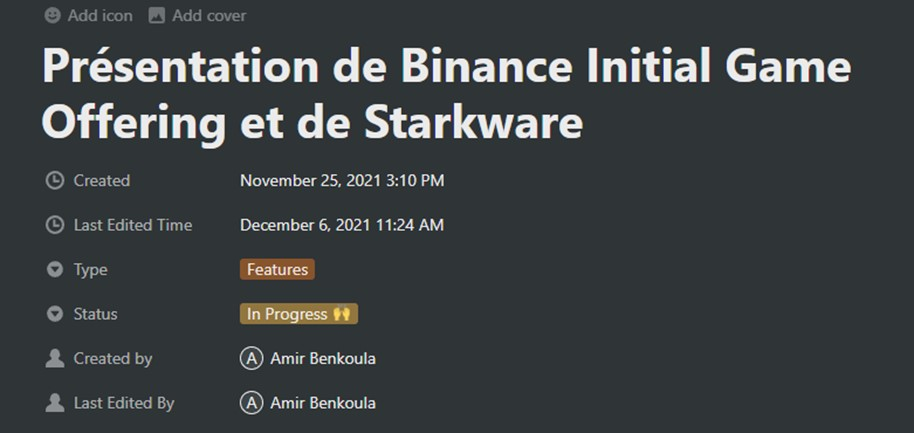
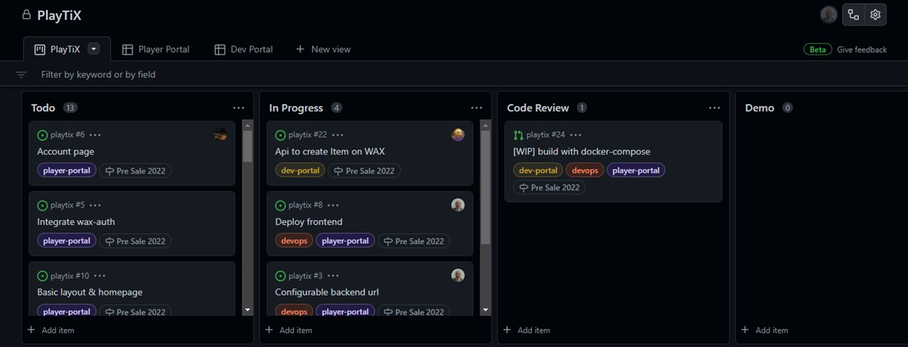

La méthode Agile
La méthode agile fonctionne en Sprint, des sections qui divisent les tâches de cahier des charges. A chaque début de sprint, nous nous réunissons pour remplir le Back log sur JIRA, c’est-à-dire, le stock des tâches à faire, déterminées grâce aux User Stories, des descriptions d’une fonctionnalité du point de vue utilisateur, plus ou moins techniques.

Les tâches sont regroupées en Epic, par exemple l’Epic Production regroupe toutes les tâches liées à la partie production du service. J’ai pu travailler sur la partie Productionize et Tokenize Items par exemple. Il est aussi possible d’estimer le temps pour chaque Epic mais nous ne l’avons pas fait.

J’ai pu observer comment déterminer les User Stories et j’ai pu rédiger des tickets comme celui-là :

Une fois le Backlog rempli, les tâches sont jaugées, on estime le temps qu’elles devraient prendre, et on se les attribue. Après ça, tout le monde travaille sur sa tâche, et chaque jour, on se réuni lors d’un « Stand-Up » une courte réunion (environ 15min) ou chacun décrit brièvement ce qu’il a fait, ce qu’il va faire, et s’il a des points bloquants. Ces réunions se font sur Google Meet, et sont organisées sur Google Agenda :

A la fin d’un Sprint, l’équipe se réuni pour faire un récapitulatif du travail fait, chacun donne son avis et les points qu’ils voudrait garder ou changer par rapport à la manière de travailler. On commence ensuite un nouveau Sprint, et le cycle continue. Cette méthode est très efficace, surtout à distance, car elle permet de rythmer le travail. Chacun avance, quand il y a un point bloquant, il est rapidement défait, et on a une vision globale sur l’avancement du projet. En plus de ça, nous utilisions les outils Slack et Notion pour les discussions et la documentation générale de l’entreprise. Sur Slack, nous discutons tous les jours avec les autres membres de l’équipe, voire de l’entreprise, pour s’entraider ou discuter. Ça permet de rester proches et de travailler en groupe même à distance. S’il y a besoin, on passe sur Google Meet et on discute d’un problème, et grâce au partage d’écran il est plus facile de le détecter. Notion quant à lui, répertorie toute la documentation de l’entreprise, en ce qui concerne JWA, cela peut aller de la RH au benchmark de différentes blockchains et services web. J’utilise Notion pour m’informer des avancements, j’ai aussi dû rédiger une présentation du service Binance IGO et de Starkware une nouvelle blockchain basée sur Ethereum :
En ce qui concerne la partie technique, la gestion du code, nous utilisons Git, Github et Gitlab. Une fois une tâche attribuée sur JIRA, je dois cloner le répertoire correspondant, c’est-à-dire, le code du projet : Je récupère le lien du répertoire sur GitHub ou Gitlab

Et sur mon IDE (Visual Studio Code), j’entre cette commande dans le terminal : git clone lien_du_repository Ensuite je crée une branche à partir de ce répertoire, pour appliquer mon travail sans changer la branche principale. C’est tout l’intérêt de Git, collaborer sur un même projet de manière organisée, la branche principale contient le code mis à disposition des utilisateurs, et chaque branche contiennent les fonctionnalités à ajouter. La commande pour créer une branche depuis la branche ou on se situe : Git checkout -b nom_de_la_branche Une fois sur la branche, je peux commencer à travailler. A chaque avancement dans ma tâche, je mets à jour ma branche avec les commandes : git add fichier_modifié, et git commit -m « message du commit ». Un commit est une mise à jour de la branche, il contient les modifications du code, un titre et un commentaire, j’envoie ensuite les commit su GitHub avec : git push origin (la branche ou je me situe) nom_de_la_branche (la branche ciblée) Quand j’ai fini ma tâche, je récupère les changements de la branche main qui ont pu arriver entre temps. Je mets à jour ma branche, et je peux créer une Pull Request. C’est une requête pour fusionner ma branche avec la branche principale. La Pull Request contient tous les commits, un titre et une description, il est aussi possible d’effectuer des « GitHub Actions » avec une Pull Request. La PR est analysée par un autre développeur de l’équipe, une fois validée, elle est fusionnée avec la branche principale

Il est aussi possible sur GitHub et Gitlab de gérer les tâches et les incidents :
